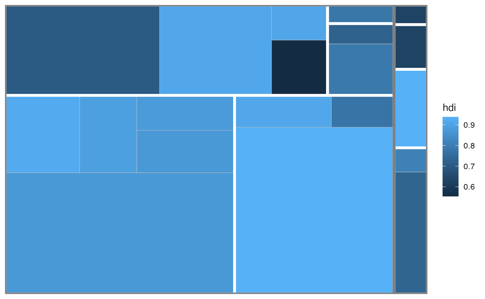

R/geom_treemap_subgroup_border.R
geom_treemap_subgroup_border.RdWhen geom_treemap() is used with a subgroup, subgroup2 or subgroup3
aesthetic to subgroup treemap tiles, geom_treemap_subgroup_border,
geom_treemap_subgroup2_border() or geom_treemap_subgroup3_border() can
be used to draw a border around each subgroup at the appropriate level.
geom_treemap_subgroup_border( mapping = NULL, data = NULL, stat = "identity", position = "identity", na.rm = FALSE, show.legend = NA, inherit.aes = TRUE, fixed = NULL, layout = "squarified", start = "bottomleft", level = "subgroup", ... ) geom_treemap_subgroup2_border(...) geom_treemap_subgroup3_border(...)
| mapping, data, stat, position, na.rm, show.legend, inherit.aes, ... | Standard
geom arguments as for |
|---|---|
| fixed | Deprecated. Use |
| layout | The layout algorithm, one of either 'squarified' (the default), 'scol', 'srow' or 'fixed'. See Details for full details on the different layout algorithms. |
| start | The corner in which to start placing the tiles. One of 'bottomleft' (the default), 'topleft', 'topright' or 'bottomright'. |
| level | One of 'subgroup', 'subgroup2' or 'subgroup3', giving the
subgrouping level for which to draw borders. It is recommended to use the
aliases |
geom_treemap_subgroup_border() geoms require area and subgroup (or
subgroup2, subgroup3`) aesthetics. Several other standard 'ggplot2'
aesthetics are supported (see Aesthetics).
Note that 'ggplot2' draws plot layers in the order they are added to the
plot. This means that if you add a geom_treemap_subgroup_border() layer
followed by a geom_treemap_subgroup2_border() layer, the second layer will
be drawn on top of the first and may hide it.
The layout argument is used to set the treemap layout algorithm. All
'treemapify' geoms added to a plot should have the same value for layout
and start, or they will not share a common layout (see geom_treemap() for
details on the layout algorithms).
area (required)
subgroup, subgroup2 or subgroup3 (required)
colour
size
linetype
alpha
ggplot2::ggplot(G20, ggplot2::aes(area = gdp_mil_usd, fill = hdi, subgroup = hemisphere, subgroup2 = region)) + geom_treemap() + geom_treemap_subgroup2_border(colour = "white") + geom_treemap_subgroup_border()